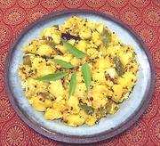

|
Potato & Coconut Stir-FryIndia / Tamil Nadu - Urulaikizhangu Poriyal | ||||
| Makes: Effort: Sched: DoAhead: |
1-1/2 # ** 40 min Yes |
One of the finest potato dishes there is, with a spectacular array of flavors - and it's easy to make - but, see Comments | |||
|
1-1/2 1/3 ------- 1/2 2/3 1/2 ------- 1 1/2 1 1/2 1/2 1/4 25 ------- 2 |
# c --- t t T --- T t T T t --- T |
Potatoes (1) Coconut, grated (2) -- Spicing Chili Powder (3) Turmeric Salt -- Tempering Chili dried (4) Mustard Seed (5) Cumin Seed Urad Dal (6) Chana Dal (7) Asafoetida (8) Curry Leaves (9) ------------ Oil |
PREP - (30 min - 15 min work)
|
isv_potcoc1 210822 ss64 - www.clovegarden.com
©Andrew Grygus - agryg@aaxnet.com - Linking to and
non-commercial use of this page is permitted.